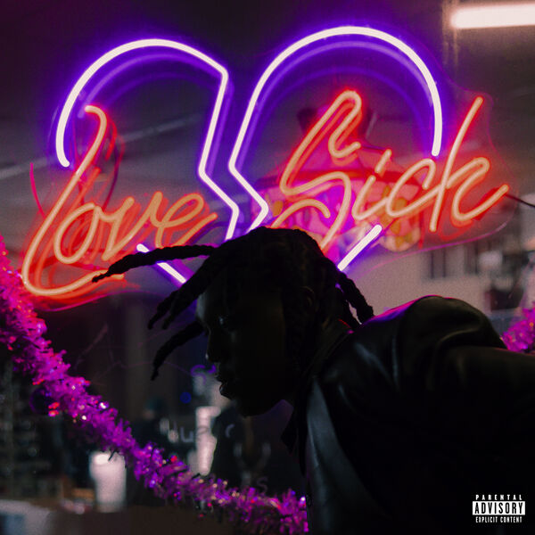

Don Toliver

Avec Life of a DON
(2021), Don Toliver a montré que son train de vie coûteux était une bonne source d'inspiration. Sur Love Sick, il se penche sur quelque chose qui ne s'achète pas : l'amour. Du sentiment non partagé (« Let Her Go [feat. James Blake] ») coup de foudre (« Leave the Club [feat. GloRilla & ; Lil Durk] »), en passant par l'amour éternel (« 4 Me [feat. Kali Uchis) »], cet album relate les péripéties du rappeur dans sa recherche de l'âme sœur.
TrackList
-
No Pole
-
Embarrassed (Ft. Travis Scott)
-
Geronimo
-
Luckily I'm Having (Ft. Teezo Touchdown)
-
LoveSickness
-
Let Her Go (Ft. James Blake)
-
Leave The Club (Ft. GloRilla & Lil Durk)
-
4 Me (Ft. Kali Uchis)
-
Go Down (Ft. TisaKorean)
-
Time Heals All
-
Leather Coat
-
Honeymoon
-
Private Landing (Ft. Future & Justin Bieber)
-
Slow Motion (Ft. Wizkid)
-
Do It Right
-
If I Had (Ft. Charlie Wilson)
-
Company Pt. 3
-
Bus Stop (Ft. Brent Faiyaz)
-
Cinderella (Ft. Toro y Moi)
-
Encouragement